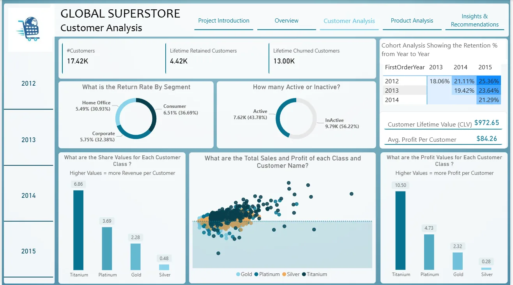
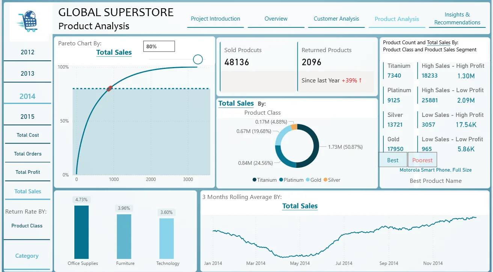
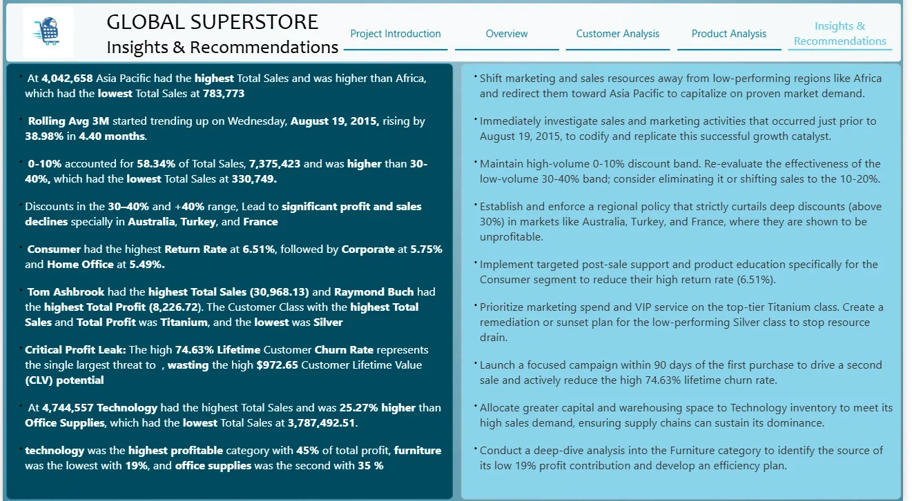

Work / Project
Global Superstore: profit and customer performance
Four years of global retail orders turned into a Power BI report that answers where profit is made, where it leaks, and which customers are worth keeping.
Approach
- Cleaning. Found and removed duplicates in Power Query. Profiled distributions and flagged outliers with the IQR method, then kept them because they are real orders that affect performance.
- Modelling. Star schema with Fact_Sales and date, customer, product and country dimensions.
- DAX. CLV and lifetime churn, yearly cohort retention, a dynamic Pareto with an adjustable threshold, weighted best/poorest product ranking, and 30-day, 3-month and 1-year rolling averages behind one switch.
- Reporting. Overview, customer, product and recommendation pages, plus a searchable customer drill-through.
Findings
74.6%lifetime customer churn against a $972.65 CLV
45%of profit from Technology; Furniture only 19%
58.3%of sales in the 0–10% discount band
6.51%return rate in Consumer, the highest segment
5×Asia Pacific sales vs Africa ($4.04M vs $0.78M)
| Problem | Recommendation |
|---|---|
| High lifetime churn | A campaign within 90 days of the first purchase to drive the second sale. |
| Deep discounts losing money in Australia, Turkey and France | A regional policy capping discounts above 30%, with approval for exceptions. |
| Weak Furniture contribution | SKU-level review of Furniture profit, discount sensitivity and returns. |
| Consumer returns | Post-sale support and product education for the Consumer segment. |
| Growth jump from 19 August 2015 (3-month average up 39% in 4.4 months) | Find what changed just before that date and repeat it. |
Report pages




What I learned
- Relationship design mattered more than visual complexity.
- Dynamic Pareto and ranking measures need strict control of filter context.
- Rolling and YoY figures mislead on partial periods unless guarded.
- Revenue from deep discounts is not always healthy revenue.